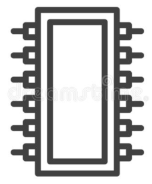
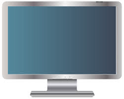
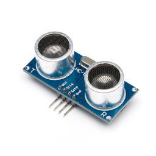
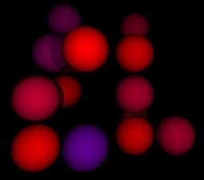
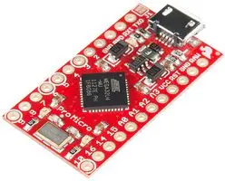

C

Raspberry Pi Pico: loading code into RAM and running it -- part 1 (Jun 2025)This is the first of (at least) two articles on loading and running arbitrary executable code into RAM on the Pico, and running it.
Categories: C, embedded computing, Pico
 Getting back into C programming for CP/M (Sep 2024)
Getting back into C programming for CP/M (Sep 2024)This article is about how programming for CP/M, usng a 40-year-old C compiler, differs from modern C development, even for console applications.
Categories: retrocomputing, C, Z80
There are relatively few good reasons for writing C code without using a standard C library. However, doing so provides valuable insights into how compilers and operating systems work, and is worth doing if only for its educational value.
Categories: software development, C, embedded computing
The Pi Pico is an impressive microcontroller for its size and cost, but it lacks specific non-volatile memory. This article explains how to use the program flash ROM for that purpose.
Categories: software development, C, Linux, embedded computing, Pico
This article describes a couple of methods for sharing data and code between a CP/M system with RomWBW BIOS and a Linux system.
Categories: C, electronics, Z80, retrocomputing
Constructing and programming a real-time clock board for my Z80 CP/M system
Categories: C, electronics, Z80, retrocomputing
Getting back into C programming for CP/M -- part 2 (May 2023)Using the 1989 HI-TECH C compiler on CP/M, and some general observations about CP/M programming with real hardware.
Categories: retrocomputing, C, Z80
 Using the Qpid Proton C++ library to understand AMQP (Apr 2023)
Using the Qpid Proton C++ library to understand AMQP (Apr 2023)AMQP is not a trivially-straightforward protocol to understand, but it's necessary to get to grips with it to write effective software that uses the Qpid Proton AMQP library. Perhaps one of the simplest ways to understand AMQP is to use Proton's own packet-tracing features, as this article explains.
Categories: C, middleware
Using media keys in a Linux console application (Mar 2023)Mapping keyboard keys to key codes on Linux is well-documented for the graphical desktop. But what about console applications on embedded Linux systems? There's not much documentation in this area.
Categories: Linux, C, embedded computing

Using the Linux framebuffer in C/C++ -- just the essentials (part 2) (Feb 2023)This article continues my original framebuffer just the essentials article, by describing how to handle less straightforward framebuffer configurations.
Categories: software development, C, Linux, embedded computing
The absolute minimum information needed to start using the Linux framebuffer as a graphical display in C/C++ applications.
Categories: software development, C, Linux, embedded computing
The Maxim DS3231 I2C real-time clock is a reasonably accurate, inexpensive device, that is easy to interface to the Raspberry Pi Pico.
Categories: C, embedded computing, Pico
This article describes how to generate and use compressed, anti-aliased font data, for use in a microcontroller application.
Categories: C, Linux, embedded computing, Pico
An oddity of the GCC C compiler that can lead to strange results, particularly in an embedded application
Categories: C, embedded computing
This is the second of (at least) two articles on loading and running arbitrary executable code into RAM on the Pico, and running it.
Categories: C, embedded computing, Pico
The Pi Pico has USB host support, and can work with a USB keyboard. Although there are some programming examples, the general approach to programming USB host operations is not well documented.
Categories: software development, C, embedded computing, Pico
Implementing a webservice in C and Java, to see which performs better in terms of throughput and resource usage.
Categories: software development, Java, C
 The costs and benefits of software pulse-width modulation on the Raspberry Pi (Sep 2022)
The costs and benefits of software pulse-width modulation on the Raspberry Pi (Sep 2022)The Raspberry Pi doesn't offer much in the way of analog outputs, or even hardware controlled PWM. Software-controlled PWM is an alternative in some applications, but it needs to be used carefully, if inefficiencies are to be avoided.
Categories: software development, C, embedded computing, Raspberry Pi
In this article I explain how to construct, and program in C, an I2C interface to the popular HD44780 LCD display for the Raspberry Pi. Between the article and the accompanying source code, no technical details are concealed: I present the complete hardware design and every line of C code needed to operate it.
Categories: software development, C, embedded computing, Raspberry Pi
Many battery-backed power supplies for the Raspberry Pi, and similar systems, use the INA219 current/voltage monitor IC. This device has an I2C interface by which the Pi can determine the battery voltage and current, and estimate the charge level and run-time. This article describes how to write C code that interacts with the INA219.
Categories: software development, C, embedded computing, Raspberry Pi

Getting reasonably robust proximity measurements from an ultrasonic sensor on the Raspberry Pi (Sep 2022)The HC-SR04 proximity sensor is an inexpensive and widely-used ultrasonic device. Connecting one to an HC-SR04 to a Raspberry Pi is a common educational exercise, but getting accurate, repeatable measurement of distance in a real application is actually quite difficult. This article explains why, and what can be done to improve matters.
Categories: software development, C, embedded computing, Raspberry Pi
A simple and inexpensive shift register can be used to increase the digital output provision of a Raspberry Pi or microcontroller. This well-know technique is easy to apply, but has some limitations that require careful consideration.
Categories: software development, C, embedded computing, Raspberry Pi
Sometimes it's helpful to be able to create an executable program that embeds all the data it needs, and provide that data as files. C/C++ do not provide any standard way to do this, but GCC has facilities that the developer can use.
Categories: software development, C
cwordle -- A Wordle-like word-guessing game for CP/M (Feb 2022)Building a CP/M implementation of the notorious Wordle game.
Categories: retrocomputing, C, Z80
 Converting a floating-point number to a fraction (approximately) using continued fraction expansion (Jan 2022)
Converting a floating-point number to a fraction (approximately) using continued fraction expansion (Jan 2022)A detailed description of a method for performing this common numerical conversion, with C source code.
Categories: mathematics, C

Conway's Game of Life in 3D perspective (Oct 2021)Implementing a program to run Conway's cell population simulation, using a 3D perspective view on the Linux framebuffer.
Categories: software development, C, Linux
Developing KCalc-CPM -- a scientific calculator utility for CP/M (May 2021)My first CP/M program for nearly 40 years -- how, and why, I wrote it.
Categories: retrocomputing, C, Z80
Running CP/M on the Raspberry Pi Pico microcontroller (May 2021)This article introduces CPICOM -- an emulator for CP/M 2.2 on the Raspberry Pi microcontroller.
Categories: retrocomputing, Pico, C, Z80
The MAX7219 IC is widely used to control an 8x8 matrix of LED, but they can be chained to create much larger displays. This article describes how the chaining works, and how to create a driver for the Raspberry Pi Pico.
Categories: software development, C, embedded computing, Pico
Make an auxiliary LCD display for a computer that displays data sent to it over a USB connection. Ready-made devices of this sort are widely available, but it's more fun to build your own.
Categories: software development, C, Linux, embedded computing, Arduino
This article describes how to do simple temperature measurement with a Raspberry Pi, and I2C analog-to-digital converter, and a thermistor.
Categories: Raspberry Pi, electronics, embedded computing, C
There are many kits and plans available for constructing miniature mechanical keyboards. But what do you do if you want a layout the nobody else seems to use? Build it from scratch.
Categories: Arduino, embedded computing, C

Building and programming a USB keypad from the ground up (Jan 2021)The first step towards designing and building a custom keyboard, from the very first principles, using an Arduino-type microcontroller.
Categories: Arduino, embedded computing, C
Although building and deploying a simple program to an Arduino board is a point-and-click operation using the Arduino IDE, implementing more complex programs requires more robust build tools. This article describes how to build on Linux using command-line tools -- a process that is nowhere near as easy as it should be. If we can build using command-line tools, we can manage a project using Makefiles and similar techniques.
Categories: Arduino, embedded computing, C
This article is about using an I2C analogue-to-digital device for applications like reading sensor values or monitoring backup batteries. With all the technical bits left in.
Categories: Raspberry Pi, electronics, embedded computing, C
Writing graphical applications for minimal and embedded Linux systems can present a challenge. One of the problems is producing nicely-rendered text without the facilities that a graphical desktop would provide. This article describes how to use the FreeType library to render text to the Linux framebuffer.
Categories: software development, C, Linux, embedded computing, Raspberry Pi
I see too many C (and C++) programs misbehave at runtime, for reasons that could easily have been detected using checks built into all modern compilers. This article describes some common C programming errors, and shows how they would have been spotted easily if the compiler were configured correctly.
Categories: software development, C
Lua is an embeddable scripting language, which can be extended in a number of useful ways. This article describes in detail how to create a Lua extension in C (or, with a bit of fiddling, C++) as a loadable (.so) library.
Categories: software development, Lua, C
Have you posted something in response to this page?
Feel free to send a webmention
to notify me, giving the URL of the blog or page that refers to
this one.